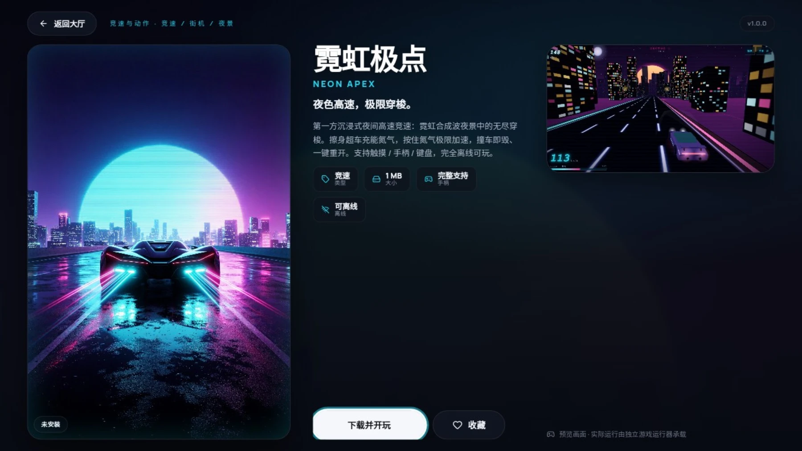
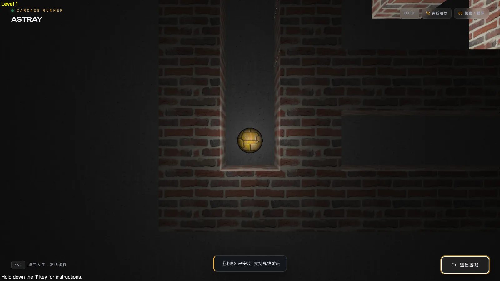

你的车机。
你的游戏厅。
为比亚迪 DiLink 等安卓车机做的横屏游戏中心。打开即玩，全部游戏支持手柄，断网也能玩，不需要账号、不需要登录、不需要会员。
无需越狱、无需账号、无需认证服务器。
APK 请安装到车机，不是手机。最低 Android 7.0（API 24），已在比亚迪 DiLink 5.0（Android 12，1920×984）实车验证。手柄为可选外设：无手柄也可用触屏与键盘。
目前专注于比亚迪车机。其他品牌可能能跑，但不在支持范围内，也没有增加支持或修复其品牌特定兼容性问题的计划。
熟悉的驾乘体验





安装到车机
- 停车后下载 APK，并通过车机支持的方式安装（文件管理器 / 应用市场 / U 盘 / ADB）。
- 打开 Free Game Hub。首次启动无需任何授权，设置页里可以检查更新。
- 连上手柄即可开始玩 —— 大厅里左右键切封面，A 键直接开始，长按 B 退出游戏。
日常使用不需要 ADB。APK 安装方式取决于车机固件；部分固件会要求在系统设置里手动打开「未知来源安装」。
安装与使用指南 ↗1.17 更新内容
- 网页音频 PCM 中转：网页声音不再走 Chromium 自己的输出路由（车机上那条会被丢弃），而是在网页里采成 PCM，交给原生 AudioTrack 播放 —— 这条通道真车已验证 1–20 全部可闻。
- 修掉诊断的空测试音：此前 A/B 对照用的 WAV 采样数据长度为 0，A 组从来没真正发出过声音，那次判定是无效实验。现在改为现场合成真实音频。
- 诊断补上音频流路由设备：每条活跃播放流现在都带 deviceId / deviceName，直接看出网页音频被路由到哪个设备。
- 修掉「网页音频走媒体通道」开关：此前 sinkId 传的是节点对象而非设备 id 字符串，Chromium 抛异常后静默回落，那个开关等于没开过。
- 音频 shim 抽成独立资源文件，真机与自动化探针跑同一份代码。
试用前请了解
这是公开测试版。车机固件差异很大，音频、手柄与安装流程都可能需要逐车调试。弱车机建议保持「车机性能模式」开启（默认开），它会关掉背景持续动画与景深模糊。
主要能力
- 10 款自研游戏，全部支持手柄（标准映射）+ 触摸 / 键盘
- 离线可玩：游戏包本地加载，装完断网也能玩
- CoverFlow 封面传送带大厅 + 电影感海报 + 三套主题风格
- 详情页一屏化，无需上下滚动
- 车机性能模式：关掉背景动画与景深模糊，弱车机更顺
- 游戏模式：声明
appCategory=game，争取车机游戏待遇 - 应用自动更新：设置页检查新版本 → 下载 → 校验 → 覆盖安装
在线平台（可选）
- 后台登记游戏 → 车机大厅自动出现
- 远程游戏可直接在线玩，无需下载
- 后台能看到每款游戏的今日人数 / 次数 / 时长
- 断网时静默降级，内置游戏照常可玩
获取更新
在 GitHub 上关注本项目，新版本发布会有通知；也可以在应用设置页直接检查更新。
更新与签名
覆盖安装到之前的公开版本即可保留设置与已装游戏，公开版签名密钥不变。测试版使用独立的应用包名。
请提供新诊断报告
车机上没有 ADB 时，靠应用内面板取系统视角数据。遇到无声 / 进不了游戏模式 / 连手柄泛白这类问题，报告能直接定位到根因。
- 打开应用 设置 → 车机诊断 → 导出诊断报告，报告会写入剪贴板。
- 粘贴到记事本，检查内容，删除密码及隐私信息（设备号、MAC 等）。
- 报告不会自动上传，需要你手动贴到 issue。
- 附上：车型／车机型号、Android 版本、连接方式、复现步骤、预期与实际结果、故障时间。